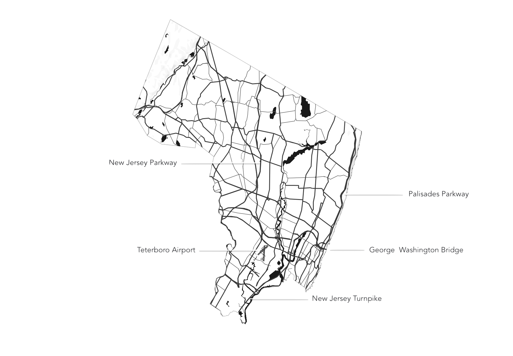

Bergen
Notes on the County of Bergen
Boundaries
 Bergen County is situated in the northeastern corner of New Jersey, bordered to the east by the Hudson River and to the north by Rockland County, New York. It extends westward to Passaic County and southward to Essex and Hudson Counties.
Bergen County is situated in the northeastern corner of New Jersey, bordered to the east by the Hudson River and to the north by Rockland County, New York. It extends westward to Passaic County and southward to Essex and Hudson Counties.
Water
 The eastern border of Bergen County is defined by the Hudson River, offering scenic views and vital transportation routes. Numerous smaller rivers and streams, such as the Hackensack and Passaic Rivers, traverse the county, providing water resources and shaping its landscape.
The eastern border of Bergen County is defined by the Hudson River, offering scenic views and vital transportation routes. Numerous smaller rivers and streams, such as the Hackensack and Passaic Rivers, traverse the county, providing water resources and shaping its landscape.
Mountains & Cliffs
 To the northwest, Bergen County is characterized by the ridges of the Ramapo Mountains and the cliffs of the Palisades along the Hudson River.
To the northwest, Bergen County is characterized by the ridges of the Ramapo Mountains and the cliffs of the Palisades along the Hudson River.
Transportation
Bergen County boasts a robust transportation network, including major highways like Interstate 80, Interstate 95 (the New Jersey Turnpike), and Routes 4, 17, and 46. Public transportation options, including NJ Transit trains and buses, connect the county to New York City and surrounding areas, facilitating commuting and travel.
Towns
 The county is home to diverse towns and municipalities, each with its own character and history. Englewood, Hackensack, Ridgewood, and Paramus are among the prominent communities known for their cultural richness, retail centers, and residential neighborhoods.
The county is home to diverse towns and municipalities, each with its own character and history. Englewood, Hackensack, Ridgewood, and Paramus are among the prominent communities known for their cultural richness, retail centers, and residential neighborhoods.